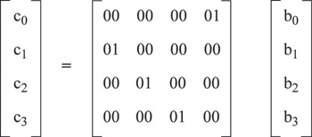

ЛЕКЦИЯ 64.3. Алгоритм АЕS Инициатива в разработке AES принадлежит NIST. В августе 1999 года были представлены пять финалистов. Ими стали MARS, RC6™, Rijndael, Serpent и Twofish. В итоге в качестве нового стандарта был принят Rijndael. Практически все операции Rijndael определяются на уровне байта. Байты можно рассматривать как элементы конечного поля GF (28). Некоторые операции определены в терминах четырехбайтных слов. Поле GF(28) Элементы конечного поля могут быть представлены несколькими различными способами. Для любой степени простого числа существует единственное конечное поле, поэтому все представления GF (28) являются изоморфными. Несмотря на подобную эквивалентность, представление влияет на сложность реализации. Выберем классическое полиномиальное представление. Байт b, состоящий из битов b7, b6, b5, b 4, b3, b2, b1, b0, представляется в виде полинома с коэффициентами из {0, 1}: b7х7 + b6х6 + b5х5 + b4х4 + b3х3 + b 2х2 + b1х1 + b0 В полиномиальном представлении сумма двух элементов является полиномом с коэффициентами, которые равны сумме по модулю 2 коэффициентов слагаемых. В полиномиальном представлении умножение в GF (28) соответствует умножению полиномов по модулю неприводимого двоичного полинома степени 8. Полином является неприводимым, если он не имеет делителей, кроме 1 и самого себя. Для Rijndael такой полином называется m(x) и определяется следующим образом: m(x) = x8 + x4 + x3 + x + 1 Умножение, определенное выше, является ассоциативным, и существует единичный элемент ('01'). Для любого двоичного полинома b(x) не выше 8-й степени можно использовать расширенный алгоритм Евклида для вычисления полиномов a(x) и c(x) таких, что b(x) a(x) + m(x) c(x) = 1 Следовательно, a(x) • b(x) mod m(x) = 1 или b-1(x) = a(x) mod m(x) Более того, можно показать, что a(x) • (b(x) + c(x)) = a(x) • b(x) + a(x) • c(x) Из всего этого следует, что множество из 256 возможных значений байта образует конечное поле GF (28) c XOR в качестве сложения и умножением, определенным выше. Если умножить b(x) на полином х, мы будем иметь: b7x8 + b6x7 + b5x6 + b4x5 + b3x4 + b 2x3 + b1x2 + b0x x • b(x) получается понижением предыдущего результата по модулю m(x). Если b7 = 0, то данное понижение является тождественной операцией. Если b7 = 1, m(x) следует вычесть (т.е. XORed). Из этого следует, что умножение на х может быть реализовано на уровне байта как левый сдвиг и последующий побитовый XOR c '1B'. Данная операция обозначается как b = xtime (a). Полиномы могут быть определены с коэффициентами из GF(28). В этом случае четырехбайтный вектор соответствует полиному степени 4. Полиномы могут быть сложены простым сложением соответствующих коэффициентов. Как сложение в GF(28) является побитовым XOR, так и сложение двух векторов является простым побитовым XOR. Умножение на х При умножении b(x) на полином х будем иметь: b3x4 + b2x3 + b1x 2 + b0x x ⊕ b(x) получается понижением предыдущего результата по модулю 1 + х 4. Это дает b2x3 + b1x2 + b0x + b3 Умножение на х эквивалентно умножению на матрицу, как описано выше со всеми ai = '00' за исключением а1 = '01'. Имеем:  Следовательно, умножение на х соответствует циклическому сдвигу байтов внутри вектора. В большинстве алгоритмов шифрования преобразование каждого раунда имеет структуру сети Фейштеля . В этом случае обычно часть битов в каждом промежуточном состоянии просто перемещается без изменения в другую половину. Преобразование раунда алгоритма Rijndael не имеет структуру сети Фейштеля. Вместо этого преобразование каждого раунда состоит из четырех различных преобразований, называемых слоями. Каждый слой разрабатывался с учетом противодействия линейному и дифференциальному криптоанализу. В основу каждого слоя положена своя собственная функция:
Перед первым раундом применяется дополнительное забеливание с использованием ключа. Причина этого состоит в следующем. Любой слой после последнего или до первого добавления ключа может быть просто снят без знания ключа и тем самым не добавляет безопасности в алгоритм (например, начальная и конечная перестановки в DES). Начальное или конечное добавление ключа применяется также в некоторых других алгоритмах, например IDEA, SAFER и Blowfish. Спецификация алгоритма Rijndael является блочным алгоритмом шифрования с переменной длиной блока и переменной длиной ключа. Длина блока и длина ключа могут быть независимо установлены в 128, 192 или 256 бит. Состояние, ключ шифрования и число раундов Различные преобразования выполняются над промежуточным результатом, называемым состоянием. Состояние можно рассматривать как двумерный массив байтов. Этот массив имеет четыре строки и различное число столбцов, обозначаемое как Nb, равное длине блока, деленной на 32. Ключ также можно рассматривать как двумерный массив с четырьмя строками. Число столбцов ключа шифрования, обозначаемое как Nk, равно длине ключа, деленной на 32. В некоторых случаях эти блоки также рассматриваются как одномерные массивы четырехбайтных векторов, где каждый вектор состоит из соответствующего столбца. Такие массивы имеют длину 4, 6 или 8 соответственно, и индексы в диапазонах 0 … 3, 0 … 5 или 0 … 7. Четырехбайтные вектора иногда мы будем называть словами. Если необходимо указать четыре отдельных байта в четырехбайтном векторе, будет использоваться нотация (a, b, c, d), где a, b, c и d являются байтами в позициях 0, 1, 2 и 3, соответственно, в рассматриваемом столбце, векторе или слове. Рисунок 4.3 – Пример состояния (с Nb = 6) и ключа шифрования (с Nk = 4) Входы и выходы Rijndael считаются одномерными массивами из 8 байтов, пронумерованными от 0 до 4* Nb - 1. Следовательно, эти блоки имеют длину 16, 24 или 32 байта, и массив индексируется в диапазонах 0 … 15, 0 … 23 или 0 … 31. Ключ считается одномерным массивом 8-битных байтов, пронумерованных от 0 до 4* Nk - 1. Следовательно, эти блоки имеют длину 16, 24 или 32 байта, и массив индексируется в диапазонах 0 … 15, 0 … 23 или 0 … 31. Входные байты алгоритма отображаются в байты состояния в следующем порядке: А0,0, А1,0, А2,0, А3,0, А 0,1, А1,1, А2,1, А3,1, … Байты ключа шифрования отображаются в массив в следующем порядке: K0,0 , K1,0, K2,0, K3,0, K0,1, K 1,1, K2,1, K3,1, … После выполнения операции шифрования выход алгоритма получается из байтов состояния аналогичным образом. Следовательно, если одноразмерный индекс байта в блоке есть n, и двухмерный индекс есть (i,j), то мы имеем: I = n mod 4 J = n / 4 N = i + 4*j Более того, индекс i является также номером байта в четырехбайтном векторе или слове, j является индексом вектора или слова во вложенном блоке. Число раундов обозначается Nr и зависит от значений Nb и Nk, что показано в следующей таблице.
Преобразование раунда Преобразование раунда состоит из четырех различных преобразований. В нотации на псевдо С это можно записать следующим образом:
Заключительный раунд алгоритма немного отличается и выглядит следующим образом:
Как мы видим, заключительный раунд эквивалентен остальным, за исключением того, что отсутствует слой MixColumn. Создание ключей раунда Ключи раунда получаются из ключа шифрования с помощью преобразования, состоящего из двух компонентов: расширение ключа и выбор ключа раунда. Основной принцип состоит в следующем:
Расширение ключа Expanded Key является линейным массивом четырехбайтных слов и обозначается как W [Nb * (Nr + 1)]. Первые Nk слов состоят из ключа шифрования. Остальные слова определяются рекурсивно. Функция расширения ключа зависит от значения Nk: существует версия функции для Nk, равным или меньшим 6, и версия для Nk больше 6. Для Nk ≤ 6 мы имеем:
В данном случае SubByte (W) является функцией, которая возвращает четырехбайтное слово, в котором каждый байт является результатом применения S-box Rijndael к байту в соответствующей позиции во входном слове. Функция RotByte (W) возвращает слово, в котором байты циклически переставлены таким образом, что для входного слова (a, b, c, d) создается выходное слово (b, c, d, a). Можно заметить, что первые Nk слов заполняются ключом шифрования. Каждое следующее слово W[i] равно XOR предыдущего слова W[i-1] и позиций слова Nk до W[i - Nk]. Для слов в позициях, которые кратны Nk, сначала применяется преобразование XOR к W[i-1] и константой раунда. Данное преобразование состоит из циклического сдвига байтов в слове RotByte, за которым следут применение табличной подстановки для всех четырех байтов в слове (SubByte). Для Nk > 6 мы имеем:
Отличие в схеме для Nk < 6 состоит в том, что для i-4 кратных Nk, SubByte применяется для W[i-1] перед XOR. Константы раунда не зависят от Nk и определяются следующим образом:
Алгоритм шифрования Алгоритм шифрования Rijndael состоит из
В С-подобном представлении это выглядит так:
Расширение ключа может быть выполнено заранее, и Rijndael может быть специфицирован в терминах расширенного ключа.
Замечание: расширенный ключ всегда получается из ключа шифрования и никогда не специфицируется непосредственно. Тем не менее, на выбор самого ключа шифрования ограничений не существует. Следующая лекция - Криптография с открытым ключом |